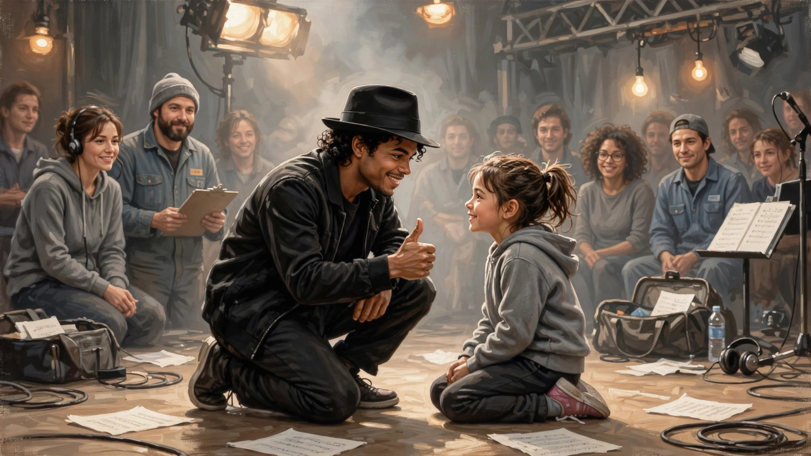

Michael Jackson，让爱永存
昨晚陪孩子去看了上海电影节的一个影片，是关于Michael Jackson最后一场演唱会彩排的纪录片，名字叫THIS IS IT。其实这部是09年的老片，现在在电影节重映。
影院在徐家汇港汇，黄金地段。但我以为不会有太多观众，一个原因，以我最近几年（疫情后）在上海观影的经历，除非个别爆款，绝大多数电影的上座率极其惨淡。再一个，虽然MJ对607080这几代人是个如雷贯耳的名字，但对现在的主流观众（00后）而言，未免相对陌生。
结果现场情况让我大跌眼镜，座无虚席，而且观众中不乏年轻人。
回到影片。我虽然早就听说过这部纪录片，但一直没有看过。这次是沾了孩子一位哥们（其实是位亦师亦友的大哥哥）的光，馈赠我们两张价值不菲的IMAX电影票。
影片本身其实不能算成功的纪录片，更像是演唱会彩排幕后花絮混剪的水平。之所以推出以来在全世界广受好评名声大噪，无非是MJ本人的巨星光环和他去世后粉丝的情怀使然罢了。
抛开电影拍摄手法和编导水平不谈，影片选取的音乐素材还是不错的。网罗了MJ各个时期的经典作品，充分展现了作为King of Pop的MJ的在编曲舞蹈舞台表演等各方面的绝世才华。更令人动容的是，影片也通过MJ和彩排工作人员的互动，让我们看到他的一颗赤子之心。不管自己名气多大咖位多高，他对与他共事的每一个人都非常和蔼亲切，而且对他们不吝赞美和鼓励。这些与他在事业后期遭受的各种谣言诽谤形成了鲜明对比。

对于他之前遭受的一切不公和委屈，他从来没有为自己辩解。他是一个纯粹的艺人，沉醉在自己的音乐世界中，与世无争。他也有一颗纯真善良的心，时常关注这颗美丽的星球，意识到“there are people dying”，希望通过他的歌来“make it a better place”。往他身上泼脏水的人，去听听他的歌吧，看看他的演唱会录像吧，你们会感到惭愧的。
永远的Michael Jackson，让爱永存。